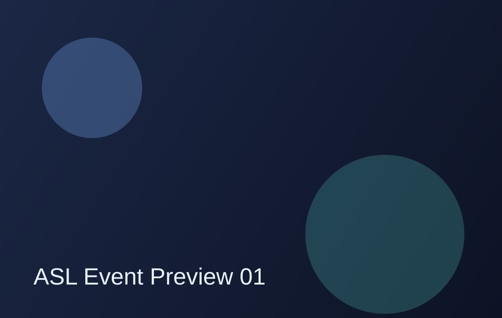
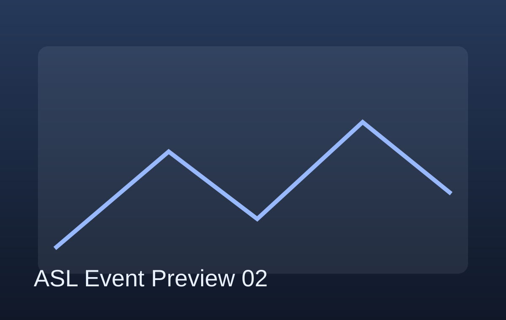
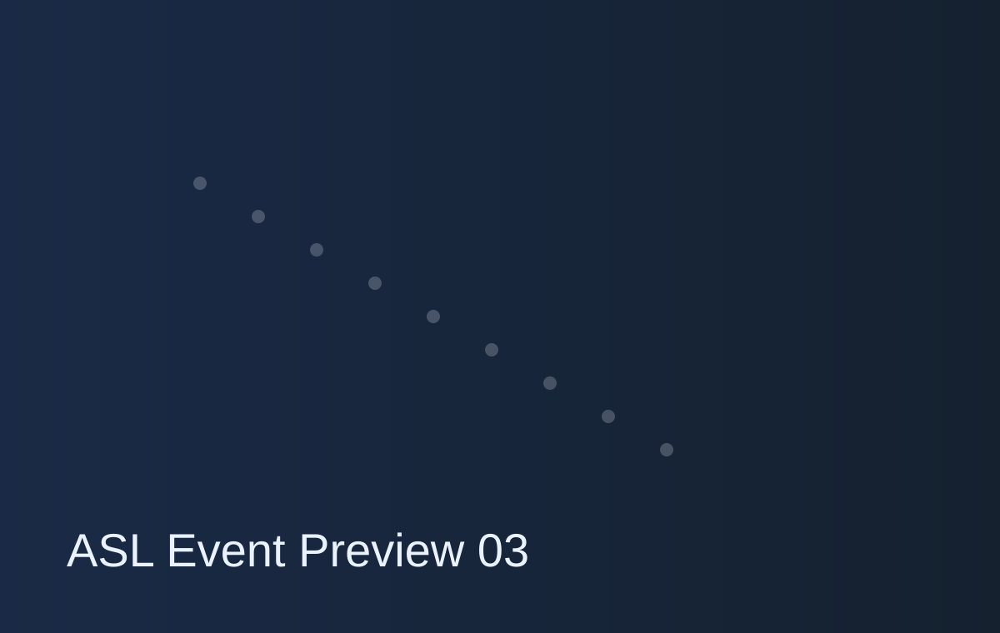
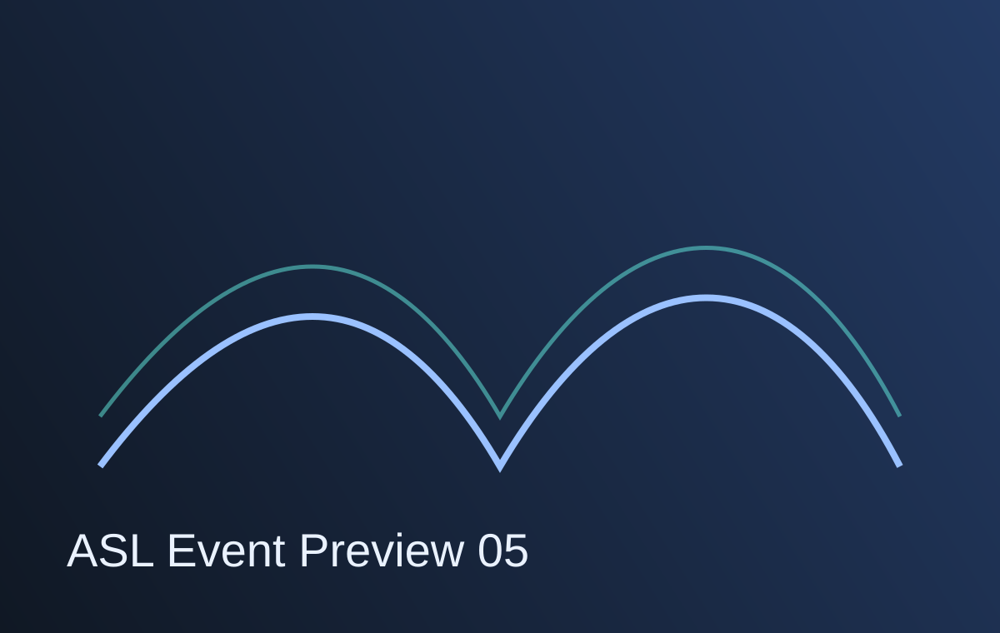
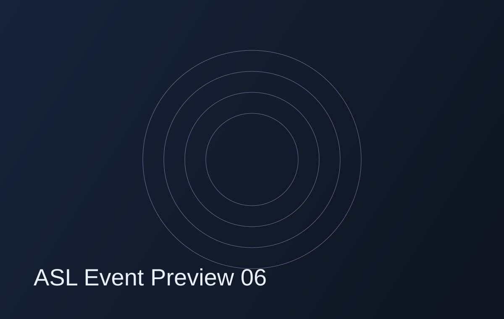

Raman & SERS
01 / 04
레이저 산란 스펙트럼으로 분자의 진동 모드를 읽어 물질을 식별합니다. SERS 기판을 이용하면 저농도 바이오마커와 대사체의 검출한계를 낮출 수 있습니다.
Hanyang University · Department of Chemistry
ASL은 분광학 기반 정량·정성 분석법을 개발하여 바이오, 재료, 환경 시료의 화학 정보를 재현성 있게 해석합니다. 실험 설계, 스펙트럼 처리, 통계 모델링을 통합해 실제 분석 문제를 해결합니다.
Laboratory Scope
연구실은 Raman, NIR, SERS, 초분광 이미징을 기반으로 측정-전처리-모델링-검증의 전 과정을 수행합니다. 각 연구는 오차 요인 분석, 교차검증, 외부 검체 검증을 포함해 분석화학적 신뢰도를 확보하는 것을 목표로 합니다.
Research Focus
01 / 04
레이저 산란 스펙트럼으로 분자의 진동 모드를 읽어 물질을 식별합니다. SERS 기판을 이용하면 저농도 바이오마커와 대사체의 검출한계를 낮출 수 있습니다.
02 / 04
비파괴·고속 측정으로 시료 조성 정보를 얻고, 회귀/분류 모델을 적용해 품질 및 원산지 판별 정확도를 검증합니다.
03 / 04
픽셀 단위 스펙트럼 데이터 큐브를 구축해 공간 정보와 화학 정보를 동시 해석하고, 불균일 시료의 위치별 조성 차이를 정량화합니다.
04 / 04
PCA, PLS(-DA), SVM 기반의 화학계량학 파이프라인으로 고차원 스펙트럼을 해석하며, 전처리와 검증 지표의 신뢰도를 체계적으로 평가합니다.
Publications
Polymer 348 (2026) 173117
Chemical Engineering Journal 529 (2026)
ACS Omega 11(3), 3866-3874 (2026)
Gallery





Members